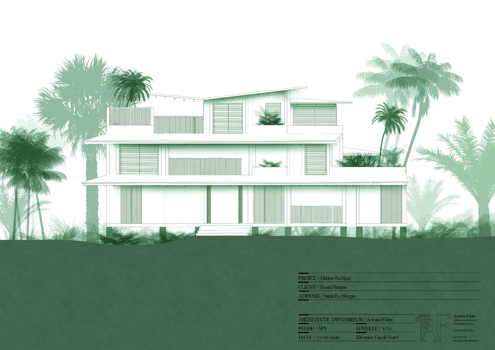
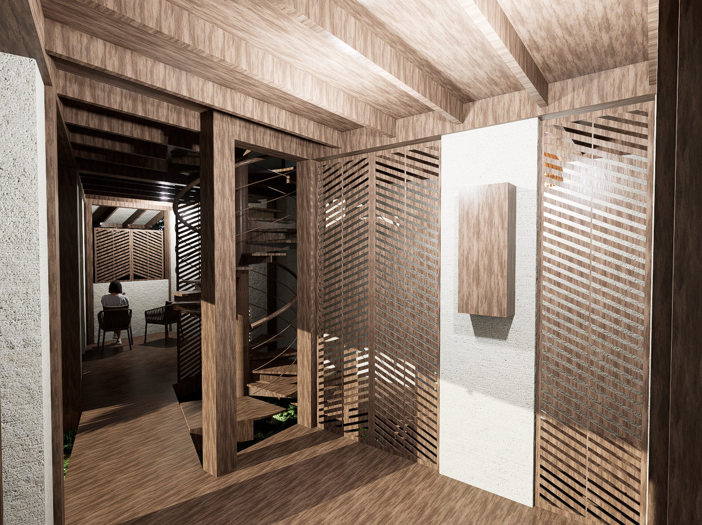
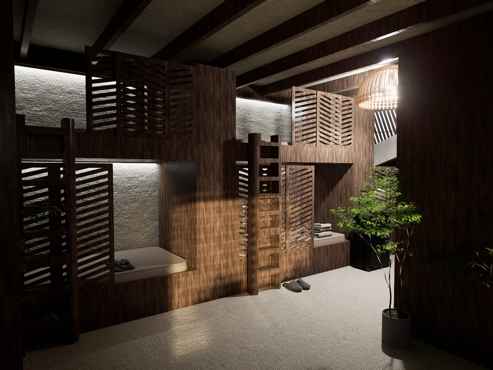

Habiter
l'archipel.
Un lieu d'hospitalité pensé à partir du climat, des usages et des espaces entre les volumes.
 01 / Une architecture habitée par le paysage
01 / Une architecture habitée par le paysageUn archipel
de lieux.
À Santa Fe, sur l'île de Siargao, le projet explore une autre manière d'habiter ensemble. Plutôt qu'un bâtiment monolithique, il articule des volumes et des espaces intermédiaires : terrasses, coursives, seuils et lieux de rencontre.
Lire le site
avant de construire.
L'échelle du territoire révèle les relations entre littoral, tissu bâti, végétation et parcours. Cette lecture guide l'implantation et la manière d'ouvrir le projet sur son environnement.

Composer
avec le climat.
Le projet répond à un contexte tropical où l'ensoleillement, les vents et les pluies participent à la conception des espaces protégés et ouverts.
Observer la trajectoire solaire pour penser les protections, les débords et les espaces ombragés.
Les diagrammes climatiques originaux seront intégrés ici dès que leurs fichiers seront accessibles sur le site.
Des volumes,
des entre-deux.
La fragmentation distingue les fonctions et donne une place centrale aux transitions : circuler, se rencontrer, s'isoler, retrouver le paysage.


Habiter
la coupe.
La coupe met en relation les niveaux, les circulations, les débords de toiture et la végétation environnante.

Des espaces
à vivre.
Les images de projet traduisent la relation entre matière, lumière, végétation et usages quotidiens.




Du dessin
à la maquette.
La maquette permet de vérifier les proportions, l'épaisseur des filtres, les débords et les relations entre structure et façade.